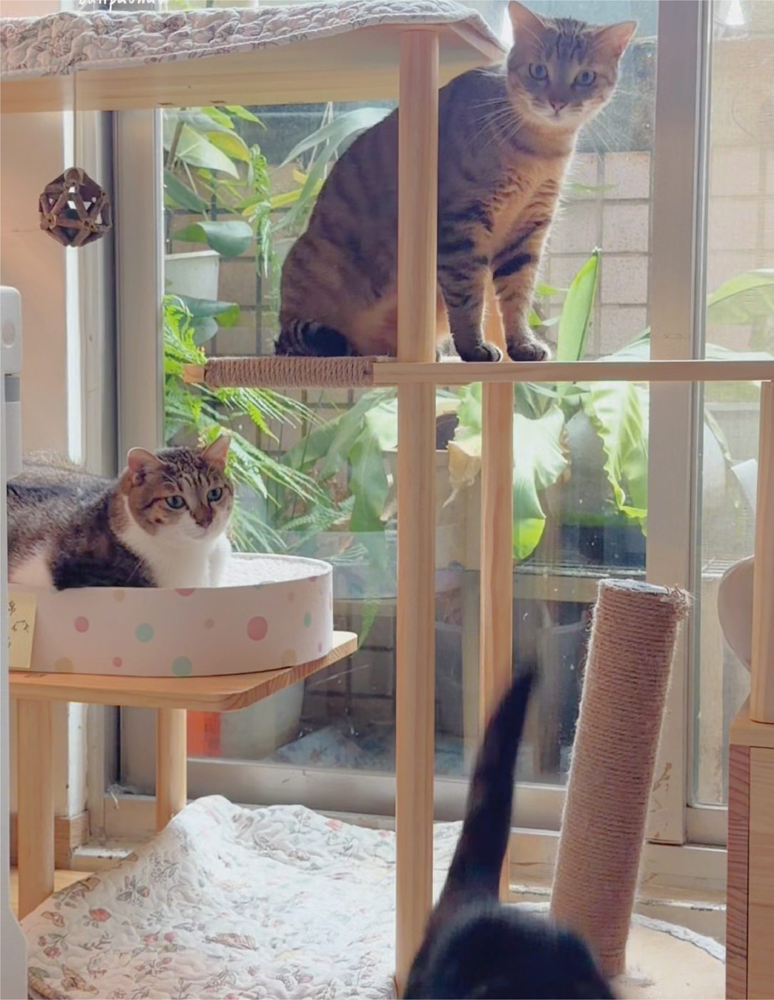
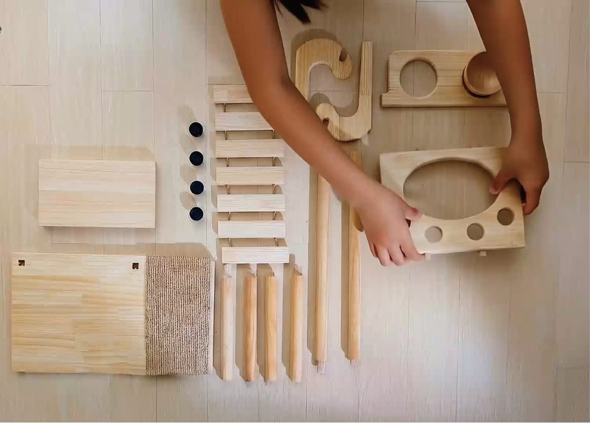

組裝會很麻煩嗎？會不會很複雜？
不用五金、不用工具，
木頭與木頭直接咬合。
貓嶼採用專利榫卯結構（M661616），組裝時不需要螺絲起子或六角扳手，木頭與木頭之間靠精密裁切直接卡合，跟著標示的方向組起來就好。
就算沒組裝過家具，第一次上手也能在 15 分鐘內完成一座跳台。
15 min
平均組裝時間
0 支
需要的工具數量
組裝麻不麻煩、穩不穩、有沒有毒——這些是每個貓飼主下單前最真實的疑慮。以下用實際規格，一條一條回答。
貓嶼採用專利榫卯結構（M661616），組裝時不需要螺絲起子或六角扳手，木頭與木頭之間靠精密裁切直接卡合，跟著標示的方向組起來就好。
就算沒組裝過家具，第一次上手也能在 15 分鐘內完成一座跳台。

每一座貓嶼跳台結構都經過靜態負重測試：60 公斤重量、反覆施壓 200 次循環，確認結構在長期使用下不會鬆動變形。
每一座出貨前，都會再次確認結構穩固，才交到你跟貓咪手上。
貓嶼使用實心木料製作，不是夾板貼皮，斷面切開仍是完整木紋。搭配非毒性封油塗裝，兼顧防潮耐用與貓咪安全。
材質、塗裝規格皆可對照官網公開的產品規格頁查詢。
| 比較項目 | 貓嶼｜實心木料 | 常見貼皮板材 |
|---|---|---|
| 斷面組成 | 整塊實木，斷面木紋一致 | 夾板 + 表面貼皮 |
| 抓咬耐用度 | 貓抓後仍是原木材質 | 貼皮易剝落、露底材 |
| 結構穩定性 | 實木榫卯直接咬合 | 多靠五金或膠合固定 |
| 長期使用 | 耐潮、耐用年限較長 | 受潮易分層變形 |
因為沒有五金卡死結構，拆卸跟組裝一樣直覺，不需要額外工具，方便搬家或換季收納。表面木材以濕布擦拭即可日常清潔。

貓嶼採模組化設計，從單貓小空間到多貓家庭都能找到合適的組合，不需要一次買齊，之後也能依需求擴充。